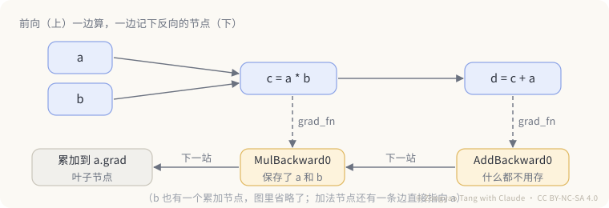
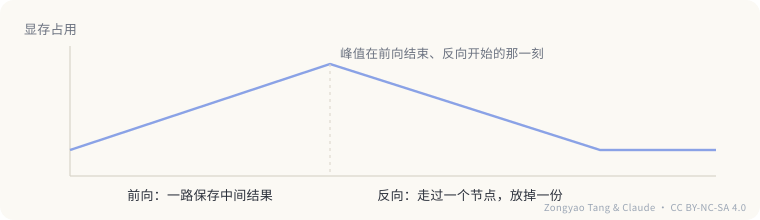

线索是：前向计算时，每个算子除了算出结果，还顺手记了一笔账 → backward() 就是照着这本账从后往前走一遍 → 为了能走回去，前向的很多中间结果必须留着，这是训练显存的大头 → 每个算子“怎么往回走”的公式集中写在一张表里 → 最后是几种让记账暂停或出错的情况。7.1 讲过的 DDP 钩子、FSDP 的反向预取，都挂在这台引擎上。
第 2 部分 · PyTorch 执行栈2.2 autograd 引擎
这一单元回答调用 backward() 时，PyTorch 到底做了什么？
承接 1.1 的反向传播（原理）和 2.1 的张量（数据结构）：这一单元看框架怎样把反向传播自动化。
- 前向时，每个算子顺手记下一个“反向节点”，连成一张图
- backward() 是对这张图的一次遍历：谁的上游都到齐了，就执行谁
- 为了能反向，前向的中间结果要一直留着：训练显存的大头
- 每个算子“怎么往回走”，写在一张表里，代码是照着它生成的
- 不记账、剪断、和改了被记下的东西：no_grad、detach 与原地操作
讲解
1前向时，每个算子顺手记下一个“反向节点”，连成一张图
只要输入里有需要求梯度的张量，一个算子在算出结果的同时，还会创建一个节点，记下“将来反向经过我时该怎么算”。这个节点挂在结果张量的 grad_fn 上，并指向产生它各个输入的那些节点。一路算下去，这些节点就连成了一张从损失指回参数的图。
看一个最小的例子：
a = torch.tensor(2.0, requires_grad=True) b = torch.tensor(3.0, requires_grad=True) c = a * b d = c + a
执行
c = a * b时，除了算出 6，还发生了三件事：- 创建一个节点，类型是“乘法的反向”（
MulBackward0）。 - 节点里保存了反向需要的东西。乘法的导数是：对 a 的梯度 = 上游梯度 × b，对 b 的梯度 = 上游梯度 × a。所以要把 a 和 b 都存下来。
- 节点里记下它的下一站（
next_functions）：a 和 b 各自的来源。a、b 是用户直接创建的“叶子”张量，它们的来源是一种特殊的节点，作用是把收到的梯度累加到.grad上。
然后把这个节点挂在
c.grad_fn上。
例子里的两行代码记下的图 执行
d = c + a时再来一遍：创建“加法的反向”节点，它的下一站是 c 的grad_fn（那个乘法节点）和 a 的累加节点。加法的导数不需要输入的值，所以它什么都不用保存。于是得到一张图：从
d.grad_fn出发，沿着next_functions能走到所有参与了计算的叶子。几个要点。
- 图是反向的图。 记下的不是“前向做了什么”，而是“反向该做什么”。节点就是反向时要执行的函数。
- 是否记账，看输入。 所有输入都不需要求梯度时，算子不创建节点，结果的
grad_fn是空的。所以数据预处理那些运算不会产生图。 - 每次前向都重新建图。 上一步的图在反向之后就被丢弃了。这就是“动态图”：图的形状可以每一步都不一样。
- 节点保存的是对张量的引用。 只要图还在，被保存的那些中间结果就不会释放。这一点是后面“训练为什么占显存”的关键。
动手：在 Python 里看这张图
这张图可以直接从 Python 里摸到，不需要任何工具。
import torch a = torch.tensor(2.0, requires_grad=True) b = torch.tensor(3.0, requires_grad=True) c = a * b d = c + a print(d.grad_fn) # <AddBackward0 ...> print(d.grad_fn.next_functions) # ((<MulBackward0 ...>, 0), (<AccumulateGrad ...>, 0)) mul = d.grad_fn.next_functions[0][0] print(mul.next_functions) # 两个 AccumulateGrad：a 和 b print(mul._saved_self, mul._saved_other) # 乘法节点保存的 a 和 b print(a.is_leaf, c.is_leaf) # True False print(a.grad_fn) # None：叶子没有 grad_fn
几个可以自己验证的现象：
- 把
a换成不需要梯度的张量，c.grad_fn变成None。 - 调用
d.backward()之后再访问mul._saved_self，会报错说它已经被释放。这就是“反向之后图被清理”。 d.backward()之后a.grad是 4：来自乘法的 3（b 的值）和加法的 1，两条路径相加。这是 1.1 讲的“一个值被用了几次，梯度就要加几次”。
对一个真实的模型，
loss.grad_fn就是这张图的入口。有一些小工具（比如 torchviz）能沿着next_functions把整张图画出来，原理就是上面这几行。打个比方像做饭时随手记流水账：每做一步，就在本子上写一行“这一步用了哪两样东西、怎么做的”。做完之后照着本子从最后一行往回翻，就能还原整个过程。
所以计算图不是事先定义好的，而是每次前向“跑”出来的。这一步跑的是哪条分支，记下的就是哪条分支的图。这是 PyTorch 能直接用 Python 的 if 和 for 写模型的原因。
- 创建一个节点，类型是“乘法的反向”（
- 账记好了。现在调用 backward()，看引擎怎样照着它往回走。
2backward() 是对这张图的一次遍历：谁的上游都到齐了，就执行谁
调用 loss.backward() 时，引擎从损失的节点出发。每个节点要等所有指向它的上游都把梯度送到、加在一起之后才能执行；执行就是调用它记下的那个反向函数，算出要传给各个下一站的梯度。引擎用 C++ 实现，为每个设备各开一个工作线程。
两个阶段。
*第一阶段：数依赖。* 从根节点（损失的
grad_fn）出发遍历整张图，数出每个节点有多少条边指向它，也就是它要等多少份梯度。*第二阶段：执行。* 维护一个“就绪队列”，一开始只有根节点，它的输入梯度是 1。然后循环：
- 从队列里取出一个节点。
- 调用它的反向函数：输入是累加好的上游梯度，输出是给每个下一站的梯度。
- 对每个下一站：把梯度加到它的输入缓冲区里，它的依赖数减一。减到零，说明它该收的梯度都到齐了，把它放进就绪队列。
- 如果下一站是叶子的累加节点，就把梯度加到那个参数的
.grad上。
队列空了，反向就结束了。
为什么要等依赖数归零。 1.1 讲过：一个值被用了几次，它的梯度就是几条路径之和。如果节点只收到一部分梯度就执行，传下去的就是错的。等所有上游到齐、加完再执行，每个节点只需要执行一次。
引擎在哪里跑。 引擎是 C++ 写的。它为 CPU 和每一张 GPU 各准备一个工作线程和一个就绪队列。一个节点在哪个设备上，就由哪个线程执行。你调用
backward()的那个 Python 线程会等到整个遍历完成。对 GPU 上的节点，“执行”的意思是调用对应的算子，而算子做的事是把 kernel 放进 GPU 的任务队列（异步的）。所以反向传播在 CPU 一侧的工作，其实是引擎线程在飞快地给 GPU 发任务。0.1 里说的“等发令”，在反向时指的就是这个线程的速度。
钩子挂在这里。 引擎在执行一个节点的前后，会调用挂在上面的钩子函数。7.1 讲的 DDP 就是在每个参数的累加节点上挂了钩子：引擎每算完一个参数的梯度，钩子被调用，DDP 借机检查“这个桶齐了没有”。梯度裁剪、打印梯度范数这类工具，用的也是同一个机制。
反向完成后。 默认情况下，每个节点执行完就释放它保存的中间结果，整张图随之失效。所以对同一张图再调一次
backward()会报错。确实需要反向两次时，第一次传retain_graph=True，代价是那些中间结果继续占着显存。源码导读：引擎的主循环
文件路径是 PyTorch 2.x 的，以你手头的版本为准。先读 2.1 里的“预备”。
从 Python 进来。
Tensor.backward()在torch/_tensor.py，它调用torch.autograd.backward()（torch/autograd/__init__.py），后者整理好参数后进入 C++。核心文件：
torch/csrc/autograd/engine.cpp。 按下面的顺序找这几个函数：Engine::execute：入口。创建一个GraphTask对象（代表“这一次 backward 调用”），调用compute_dependencies数依赖，然后把根节点放进就绪队列。Engine::compute_dependencies：第一阶段，遍历图、统计每个节点的依赖数。Engine::thread_main：工作线程的主循环。从ReadyQueue里取任务，调用evaluate_function。Engine::evaluate_function：执行一个节点。调用节点的函数拿到输出梯度，然后对每个下一站做“累加梯度、依赖数减一、归零则入队”。讲解里第二阶段的那个循环，就是这个函数。
节点的定义：
torch/csrc/autograd/function.h。Node类。看它的三样东西：next_edges_（下一站）、apply（子类要实现的反向函数）、钩子的列表。每个算子的节点在哪。 这些类是生成的。
tools/autograd/derivatives.yaml里每个算子有一条导数公式；构建时据此生成torch/csrc/autograd/generated/Functions.cpp，里面是MulBackward0::apply这样的函数。想知道某个算子反向到底算了什么，在derivatives.yaml里搜它的名字是最快的。带着这几个问题读：
- 多个上游的梯度是在哪里相加的？（搜
InputBuffer。） - 节点保存的中间结果是在哪里释放的？（搜
release_variables；它受keep_graph控制，对应 Python 的retain_graph。） - 为什么每个设备一个线程，而不是一个线程池随便分？（一个设备上的任务本来就要排队进同一条 CUDA stream，多线程发并不更快，反而要处理线程之间的同步。）
打个比方像公司里层层汇总的报表：一个部门要等所有下属小组的数字都交上来，汇总之后才能往上报。谁的材料齐了，谁就先开始。
所以反向传播在 Python 这一侧只有一行调用，真正的执行在 C++ 的线程里。Python 的开销在反向时小得多，但引擎自己的调度开销仍然是每个节点付一次。
- 上一节末尾提到“节点保存的中间结果”。它值得单独看，因为显存的大头就在这里。
3为了能反向，前向的中间结果要一直留着：训练显存的大头
很多算子的导数要用到前向时的输入或输出。所以反向节点里保存着这些张量的引用，它们要等反向经过这个节点之后才能释放。网络有几十层，每一层的输出都这样被留住，加起来就是 2.1 里那笔最大的账：激活值。
哪些算子要保存东西。 看导数公式里出现了什么：
- 乘法
c = a * b：对 a 的梯度要用到 b，对 b 的梯度要用到 a。两个输入都要存。 - 矩阵乘法、线性层：要存输入（算权重的梯度要用）。
- ReLU：只需要知道输出哪些位置大于零，存输出就够了。
- 加法：导数是常数，什么都不用存。
“存”的是引用，不是拷贝。但只要有引用在，那个张量的存储就不能释放。
什么时候释放。 前向时一路保存；反向从最后一层往回走，走过一个节点，它保存的东西才能放掉。所以显存占用在前向过程中一路上升，前向结束、反向开始的那一刻达到峰值，然后随着反向的推进逐步下降。这就是 2.1 里说“量峰值要用 max_memory_allocated”的原因。

量显存要量峰值，而峰值出现在一步的中间 对比推理。 在
torch.no_grad()里，算子不创建节点，也就没有人保存这些中间结果。第 k 层的输入在第 k 层算完之后就没人引用了，立刻释放。任何时刻只有一两层的激活值活着。减少这笔显存的办法。
- *让每个激活值更小。* 混合精度（存 16 位的而不是 32 位的）；减小 batch 或序列长度。
- *少存一些，用到时重算。* activation checkpointing：把模型分成若干段，前向时只保存每段的输入，段内的中间结果不留。反向到某一段时，从保存的输入出发把这一段的前向重算一遍，这次才保存中间结果，用完马上释放。代价是每一段的前向多算了一次，大约多花三成的时间，换来的是激活值显存从“和层数成正比”降到“和层数的平方根成正比”量级。这是 0.1 里“用计算换存储”的标准例子；4.4 的 Flash Attention 在反向时重算注意力，是同一个思路。
- *用不需要保存的写法。* 有些运算可以原地进行（下一节会讲它的限制）。
一个常见的泄漏。 在训练循环里写
total_loss += loss，total_loss就成了一个带着grad_fn的张量，它通过图引用着每一步的所有中间结果。于是每一步的图都没法释放，显存一步步涨到溢出。正确的写法是total_loss += loss.item()或loss.detach()：只取数值，不带图。打个比方像爬山时沿途留下的路标：上山时每走一段插一面旗，下山时要靠它们认路，所以旗子不能提前拔。山越高，插的旗越多。
所以训练的显存和网络深度成正比，而推理只需要留住当前这一层。省这笔显存的办法只有两类：让每面“旗”更小（低精度、小 batch），或者少插一些、下山时重新走一段来补（重算）。
- 乘法
- 引擎只负责“按顺序调用每个节点的函数”。每个节点具体算什么，是另一处定义的。
4每个算子“怎么往回走”，写在一张表里，代码是照着它生成的
PyTorch 有上千个算子，每个都需要一个反向节点。这些节点不是手写的：所有算子的导数公式集中在 derivatives.yaml 这张表里，构建时由脚本读这张表，为每个算子生成它的节点类，以及前向时“创建节点、保存输入、连上下一站”的那段包装代码。
表里写的是什么。
tools/autograd/derivatives.yaml里每个算子一条，大意是这样的：- name: mul.Tensor(Tensor self, Tensor other) -> Tensor self: mul_tensor_backward(grad, other, self.scalar_type()) other: mul_tensor_backward(grad, self, other.scalar_type())
读法：对输入
self的梯度，等于用上游梯度grad和另一个输入other算出来的某个量。公式里出现了哪个输入，生成器就知道前向时要把它保存下来。这里的公式不是数学课上的“导数”，而是“给定上游梯度，算出传给这个输入的梯度”。数学上叫向量和雅可比矩阵的乘积。好处是永远不需要把巨大的雅可比矩阵真的写出来，只需要它和一个向量相乘的结果。
生成了什么。 对每一条，构建脚本生成两样东西：
- 一个节点类（比如
MulBackward0），它的函数体就是表里的公式。 - 一段包装代码：在调用真正的乘法实现之前和之后，判断是否需要求梯度、创建节点、保存输入、把节点挂到输出上。这段包装代码就是 2.3 要讲的“autograd 层”，一次算子调用会先经过它。
对你写的模型意味着什么。
- 用已有算子拼出来的任何计算，都自动可导：每个算子记下自己的节点，连起来就是整体的反向。
- 只有当你要用一个 autograd 不认识的运算（比如自己写的 CUDA kernel），或者想用一个更省事的反向公式替代自动推导出来的那个，才需要自己定义反向：继承
torch.autograd.Function，写forward和backward两个函数。4.4 的 Flash Attention 就属于后者，它的反向是专门设计的。
读源码时的用法。 遇到“这个算子的梯度为什么是这样”“这个算子反向会不会保存输入”这类问题，直接看这张表。表里写着用到了哪些输入，就知道它保存了什么；公式调用的辅助函数在
torch/csrc/autograd/FunctionsManual.cpp里。打个比方像一本菜谱和一条按菜谱自动配菜的流水线：想知道某道菜怎么做，不用去车间里看机器，翻菜谱就行。
所以想知道某个算子的梯度到底是怎么算的，最快的办法是在这张表里搜它的名字。自己用现有算子组合出来的运算不需要写导数，autograd 会把各个算子的导数自动串起来。
- 一个节点类（比如
- 最后是几种改变记账行为的情况。它们在日常代码里很常见，报错信息也常常和它们有关。
5不记账、剪断、和改了被记下的东西：no_grad、detach 与原地操作
no_grad 让一段代码里的算子都不创建节点。detach 得到一个共用存储、但和图断开的张量。原地操作（名字以下划线结尾的，比如 add_）直接修改张量的内容，如果被改的张量正被某个节点保存着等反向用，autograd 会在反向时发现并报错。
no_grad：这一段不记账。
with torch.no_grad(): y = model(x)里面的算子都不创建节点，结果没有
grad_fn。好处有两个：省掉了创建节点的时间；更重要的是没有人保存中间结果，显存占用小得多（上一节）。评估、推理、以及优化器更新参数的那一步，都在这种模式下进行。还有一个更彻底的torch.inference_mode()，连下面要讲的版本计数都省了，推理时可以优先用它。detach：把一个张量从图上摘下来。
y = x.detach()得到的y和x共用存储（是一个视图，2.1），但没有grad_fn，梯度不会经过它流回去。用途：把某个中间结果当作常数来用；把损失的数值拿出来记录而不留住整张图。原地操作和版本计数器。 每个张量有一个版本号，每被原地修改一次就加一。节点保存一个张量时，同时记下当时的版本号。反向执行到这个节点时，如果发现版本号变了，说明保存的数据已经不是前向时的值，用它算出的梯度是错的。这时 autograd 直接报错，信息里会出现 “modified by an inplace operation”。
例如：
a = torch.randn(3, requires_grad=True) b = a * 2 c = b * b # 乘法节点保存了 b b.add_(1) # 原地修改 b：版本号加一 c.sum().backward() # 报错
这个检查是保护你的：没有它，梯度会悄悄算错。遇到这个报错，把对应的原地操作改成普通的（
b = b + 1）即可，代价是多一个临时张量。原地操作什么时候是安全的。 被修改的张量没有被任何节点保存时。比如 ReLU 保存的是输出，所以
relu_可以安全地原地进行；优化器更新参数是在no_grad里原地改的，那时图已经用完了。视图让情况更复杂。 视图和原张量共用存储，也共用版本号。原地改了其中一个，另一个的版本号也变了。所以有时报错指向的张量，你并没有直接改过它，改的是它的某个视图。
打个比方还是那本流水账：no_grad 是这一段不记；detach 是把某样东西从账上勾掉，之后它的去向与这本账无关；原地操作是把账上记着“用了 3 勺”的那罐东西偷偷换了，回头照着账复原时就对不上了。
所以推理和评估要包在 no_grad 里，省时间也省显存；想把一个值当常数用，就 detach；原地操作能省显存，但 autograd 会检查它是否破坏了反向需要的数据。
串起来
前向时每个算子生成一个反向节点（grad_fn），节点之间连成图，并保存反向需要的中间结果。backward() 由 C++ 的引擎按依赖顺序执行这些节点。保存的中间结果要到反向用完才释放，所以训练比推理占显存。每个算子的导数公式在 derivatives.yaml 里，节点的代码由它生成。no_grad 不记账，detach 剪断图，原地修改被保存的张量会被版本计数器抓到。
考考自己
不看讲解，用自己的话讲一遍。
- 前向计算时，autograd 为每个算子记录了什么？grad_fn 和 next_functions 各是什么？
- autograd 引擎按什么顺序执行反向节点？为什么一个节点要等“依赖数归零”才能执行？
- 为什么训练时前向的中间结果不能立刻释放？有哪些办法减少这部分显存？
- PyTorch 里每个算子的导数定义在哪里？它是怎样变成可执行的反向节点的？
- torch.no_grad() 和 detach() 有什么区别？原地操作为什么有时会导致反向报错？
术语
- grad_fn
- 产生这个张量的反向节点
- leaf tensor
- 叶子张量
- vector-Jacobian product
- 向量-雅可比积
- version counter
- 版本计数器
- retain_graph
- 保留计算图